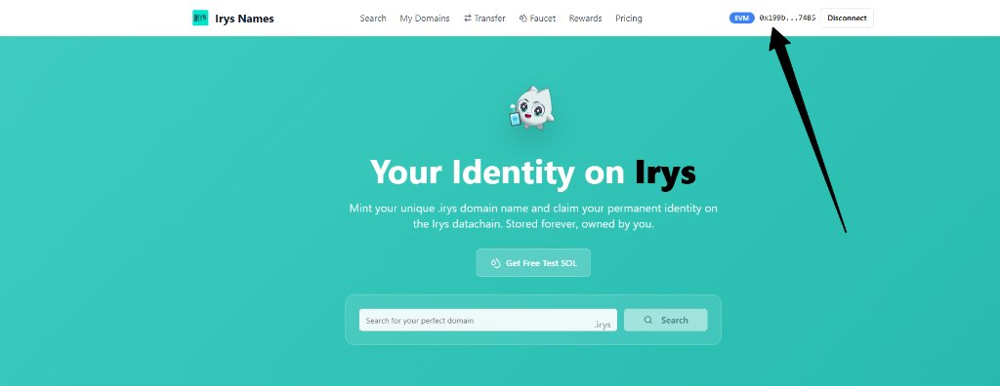
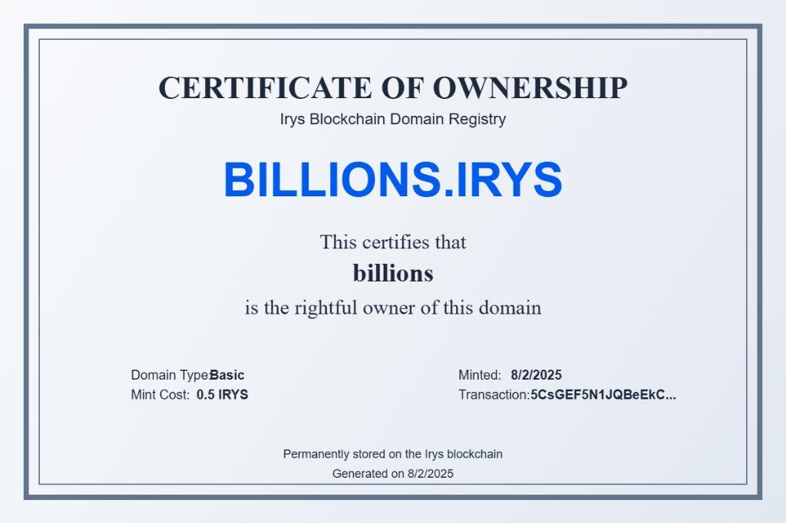

Irysnameservice.
Founded an on-chain .irys domain-minting, mutable-reference transfer, and Proof-of-Vibe onboarding dApp—documented in CV as reaching #1 dApp in the Irys ecosystem.
Overview
Irysnameservice (Irys Names) allows users to search, mint, and permanently store .irys domain identities on the Irys datachain across EVM and Solana wallets. Beyond minting, it includes a 5-step mutable-reference domain transfer workflow, permanent on-chain Certificates of Ownership, and interactive GraphQL flashcards.
The Problem
Emerging blockchain datachains need approachable consumer identity products—paired with clear developer education and community distribution—to turn ecosystem interest into sustained on-chain interaction.
Product Concept
Combine permanent on-chain naming with frictionless multi-chain onboarding (EVM + Solana + built-in Test SOL faucet), verifiable ownership certificates, and bite-sized ecosystem learning cards.
Approach & Implementation
Defined the core minting, transfer, and certificate flows around Irys's permanent storage and mutable-reference primitives, while pairing product launches with community outreach and Solana Ambassador demonstration.
Key Features
- Permanent .irys domain search and minting stored directly on the Irys datachain
- Multi-chain wallet connection (EVM & Solana) with built-in Test SOL faucet, Rewards, and Pricing views
- 5-step Domain Ownership Transfer workflow (Verify → Configure → Confirm → Processing → Complete) built on Irys mutable references
- On-chain Certificates of Ownership recording domain tier, mint cost, timestamp, and transaction hash
- Interactive IRYS Flashcards (Proof of Vibe) teaching GraphQL indexing and datachain fundamentals
Challenges & Decisions
Pairing functional domain transfers with shareable Ownership Certificates and interactive flashcards turned one-off testnet mints into repeat community education and organic sharing.
Outcome & Current Status
Documented in CV as becoming the #1 dApp in the Irys ecosystem; a 1-minute walkthrough video and four real product captures are preserved directly in this case study.
Product Screens & On-Chain Artifacts
Actual interface captures showing multi-chain domain search, mutable-reference transfers, permanent ownership certificates, and Proof-of-Vibe flashcards.


